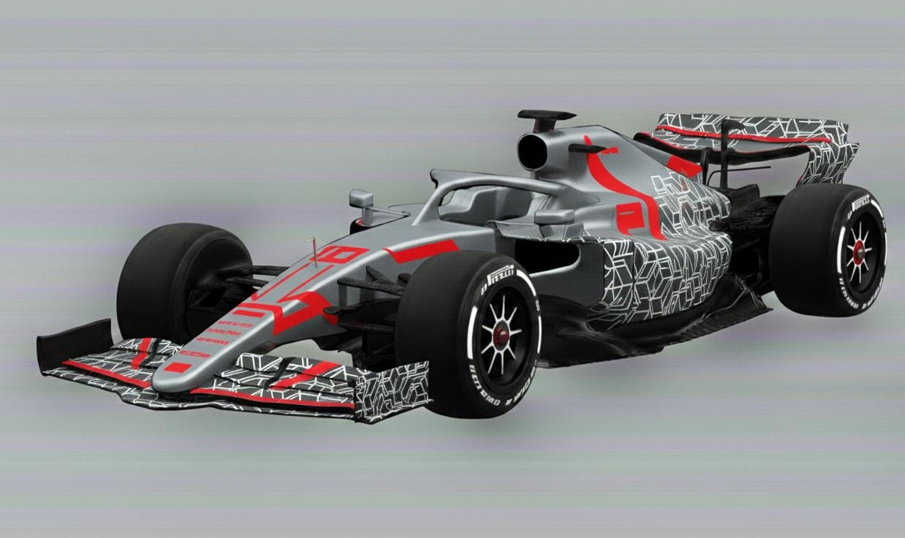
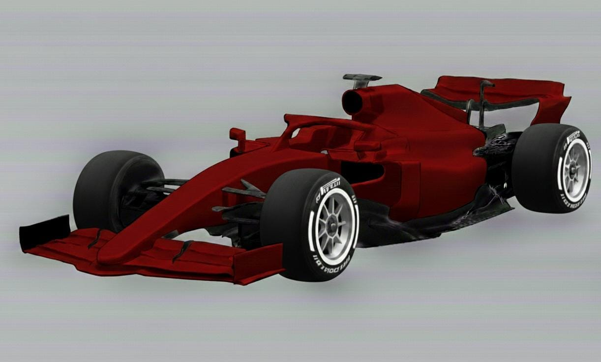
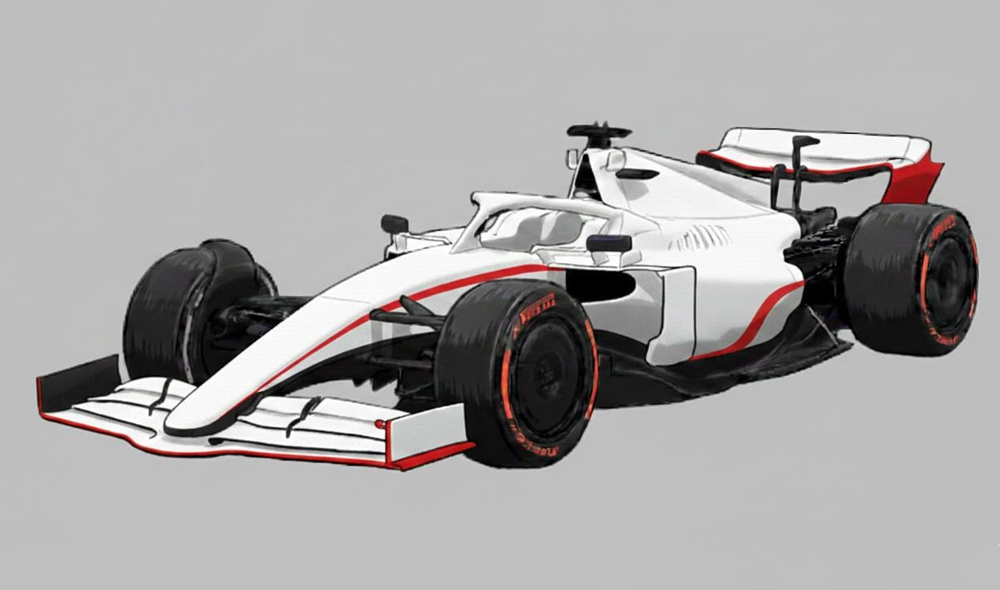
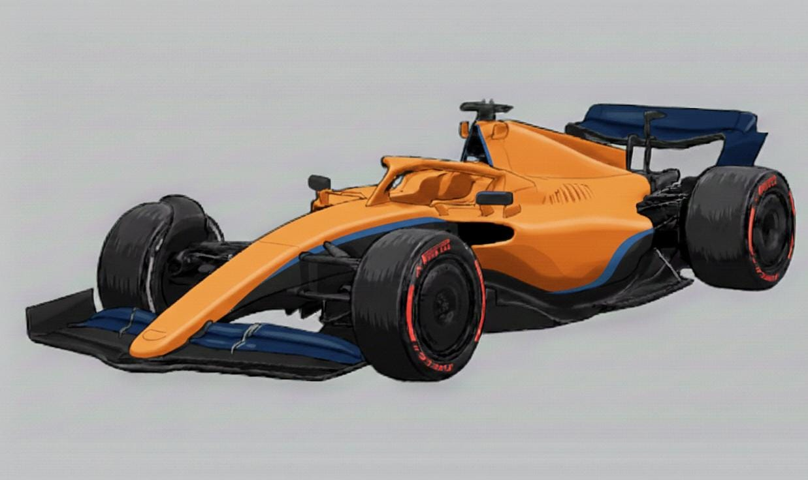
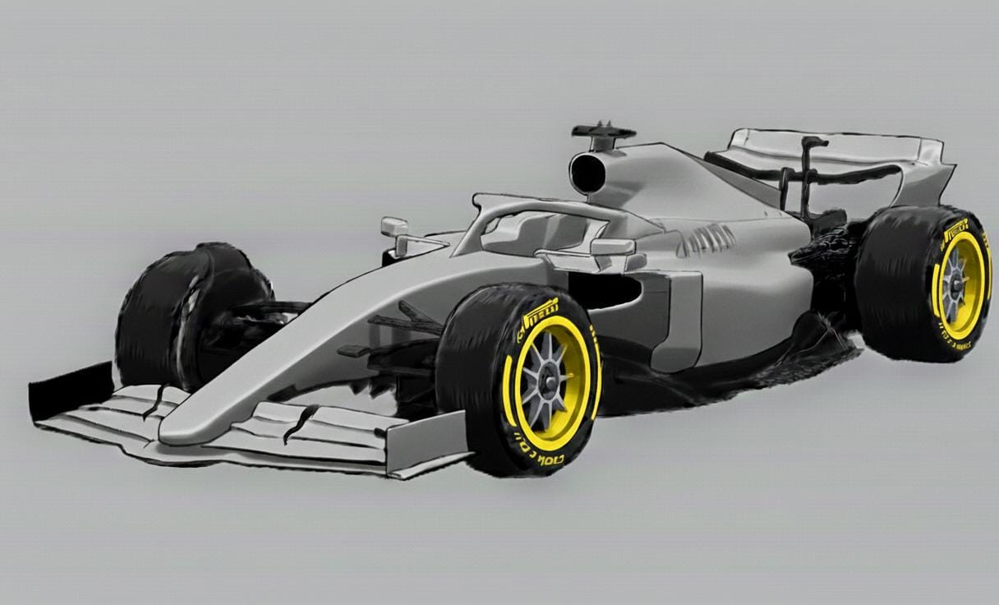
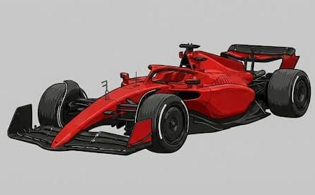
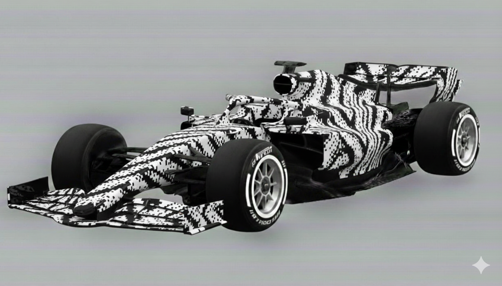
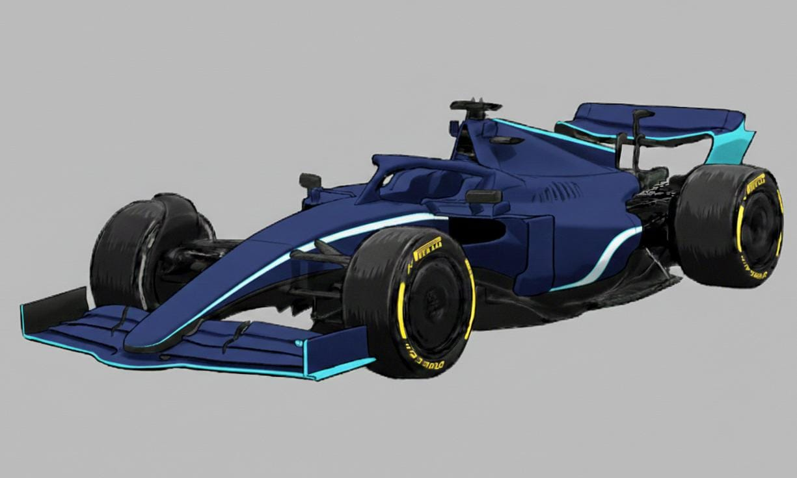

Pilotos 2026
Número: 14
Info: El nano es una bala, azul que sin cañón...

Número: 44
Info: Un archiconicido en la F1, heptacampeón para algunos octacampeón para otros

Equipos 2026

ALPINE
BWT Alpine Formula One Team
Base: Enstone, Reino Unido | Motor: Mercedes
Pilotos: Pierre Gasly / Franco Colapinto

ASTON MARTIN
Aston Martin Aramco Formula One Team
Base: Silverstone, Reino Unido | Motor: Honda
Pilotos: Fernando Alonso / Lance Stroll

AUDI
Audi Revolut F1 Team
Base: Hinwil, Suiza | Motor: Audi
Pilotos: Nico Hulkenberg / Gabriel Bortoleto

CADILLAC
Cadillac Formula 1 Team
Base: Silverstone, Reino Unido | Motor: Ferrari
Pilotos: Sergio Pérez / Valtteri Bottas

HAAS
TGR Haas F1 Team
Base: Kannapolis, Estados Unidos | Motor: Ferrari
Pilotos: Esteban Ocon / Oliver Bearman

MCLAREN
McLaren Mastercard F1 Team
Base: Woking, Reino Unido | Motor: Mercedes
Pilotos: Lando Norris / Oscar Piastri

MERCEDES
Mercedes-AMG PETRONAS Formula One Team
Base: Brackley, Reino Unido | Motor: Mercedes
Pilotos: George Russell / Kimi Antonelli

RED BULL
Oracle Red Bull Racing
Base: Milton Keynes, Reino Unido | Motor: Red Bull Ford
Pilotos: Max Verstappen / Isack Hadjar

FERRARI
Scuderia Ferrari
Base: Maranello, Italia | Motor: Ferrari
Pilotos: Hamilton / Leclerc

RACING BULLS
Visa Cash App Racing Bulls Formula One Team
Base: Faenza, Italia | Motor: Red Bull Ford
Pilotos: Liam Lawson / Arvid Lindblad

WILLIAMS
Atlassian Williams F1 Team
Base: Grove, Reino Unido | Motor: Mercedes
Pilotos: Carlos Sainz / Alexander Albon
Clasificación Provisoria 2026
Pilotos
| Pos | Piloto | Constructor | Pts |
|---|---|---|---|
| 1 | Alexander Albon | Williams | 0 |
| 2 | Arvid Lindblad | Racing Bulls | 0 |
| 3 | Carlos Sainz | Williams | 0 |
| 4 | Charles Leclerc | Ferrari | 0 |
| 5 | Esteban Ocon | Haas F1 Team | 0 |
| 6 | Fernando Alonso | Aston Martin | 0 |
| 7 | Franco Colapinto | Alpine | 0 |
| 8 | Gabriel Bortoleto | Audi | 0 |
| 9 | George Russell | Mercedes | 0 |
| 10 | Isack Hadjar | Red Bull Racing | 0 |
| 11 | Kimi Antonelli | Mercedes | 0 |
| 12 | Lance Stroll | Aston Martin | 0 |
| 13 | Lando Norris | McLaren | 0 |
| 14 | Lewis Hamilton | Ferrari | 0 |
| 15 | Liam Lawson | Racing Bulls | 0 |
| 16 | M. Verstappen | Red Bull Racing | 0 |
| 17 | Nico Hulkenberg | Audi | 0 |
| 18 | Oliver Bearman | Haas F1 Team | 0 |
| 19 | Oscar Piastri | McLaren | 0 |
| 20 | Pierre Gasly | Alpine | 0 |
| 21 | Sergio Perez | Cadillac | 0 |
| 22 | Valteri Bottas | Cadillac | 0 |
Equipos
| Pos | Escudería | Pts |
|---|---|---|
| 1 | Alpine | 0 |
| 2 | Aston Martin | 0 |
| 3 | Audi | 0 |
| 4 | Cadillac | 0 |
| 5 | Ferrari | 0 |
| 6 | Haas F1 Team | 0 |
| 7 | McLaren | 0 |
| 8 | Mercedes | 0 |
| 9 | Racing Bulls | 0 |
| 10 | Red Bull Racing | 0 |
| 11 | Williams | 0 |
Calendario de Temporada
Melbourne, Australia — 15 Marzo
Longitud: 5.278 km
Vueltas: 58
Detalle: Circuito semi-urbano conocido por su alta velocidad.

Shanghái, China — 13 Marzo // 15 Marzo
Longitud: 5.451 km
Vueltas: 56
Detalle: El trazado de referencia técnica para todos los equipos.

Suzuka, Japón — 27 Marzo // 29 Marzo
Longitud: 5.451 km
Vueltas: 56
Detalle: El trazado de referencia técnica para todos los equipos.
Sakhir, Baréin — 10 Abril // 12 Abril
Longitud: 5.451 km
Vueltas: 56
Detalle: El trazado de referencia técnica para todos los equipos.
Yeda, Arabia Saudita — 17 Abril // 19 Abril
Longitud: 5.451 km
Vueltas: 56
Detalle: El trazado de referencia técnica para todos los equipos.
Miami, Estados Unidos — 1 Mayo // 3 Mayo
Longitud: 5.451 km
Vueltas: 56
Detalle: El trazado de referencia técnica para todos los equipos.
Montreal, Canadá — 22 Mayo // 24 Mayo
Longitud: 5.451 km
Vueltas: 56
Detalle: El trazado de referencia técnica para todos los equipos.
Montecarlo, Mónaco — 5 Junio // 7 Junio
Longitud: 5.451 km
Vueltas: 56
Detalle: El trazado de referencia técnica para todos los equipos.
Barcelona, España — 12 Junio // 14 Junio
Longitud: 4.657 km
Vueltas: 66
Detalle: El trazado de referencia técnica para todos los equipos.
Spielberg, Austria — 26 Junio // 28 Junio
Longitud: 4.318 km
Vueltas: 71
Detalle: El trazado de referencia técnica para todos los equipos.
Inglaterra, Gran Bretaña — 3 Julio // 5 Julio
Longitud: 5.891 km
Vueltas: 52
Detalle: El trazado de referencia técnica para todos los equipos.
Spa-Francorchamps, Bélgica — 17 Julio // 19 Julio
Longitud: 7.004 km
Vueltas: 44
Detalle: El trazado de referencia técnica para todos los equipos.
Mogyoród, Hungría — 24 Julio // 26 Julio
Longitud: 4.381 km
Vueltas: 70
Detalle: El trazado de referencia técnica para todos los equipos.
Haarlem, Países Bajos — 21 Agosto // 23 Agosto
Longitud: 4.259 km
Vueltas: 72
Detalle: El trazado de referencia técnica para todos los equipos.
Monza, Italia — 4 Septiembre // 6 Septiembre
Longitud: 5.793 km
Vueltas: 53
Detalle: El trazado de referencia técnica para todos los equipos.
Madrid, España — 11 Septiembre // 13 Septiembre
Longitud: 5.451 km
Vueltas: 56
Detalle: El trazado de referencia técnica para todos los equipos.
Bakú, Azerbaiyán — 24 Septiembre // 26 Septiembre
Longitud: 6.003 km
Vueltas: 51
Detalle: El trazado de referencia técnica para todos los equipos.
Marina Bay, Singapur — 9 Octubre // 11 Octubre
Longitud: 4.940 km
Vueltas: 62
Detalle: El trazado de referencia técnica para todos los equipos.
Austin, Estados Unidos — 23 Octubre // 25 Octubre
Longitud: 5.513 km
Vueltas: 56
Detalle: El trazado de referencia técnica para todos los equipos.
Ciudad de México, México — 30 Octubre // 1 Noviembre
Longitud: 4.304 km
Vueltas: 71
Detalle: El trazado de referencia técnica para todos los equipos.
São Paulo, Brasil — 6 Noviembre // 8 Noviembre
Longitud: 4.309 km
Vueltas: 71
Detalle: El trazado de referencia técnica para todos los equipos.
Las Vegas, Estados Unidos — 19 Noviembre // 21 Noviembre
Longitud: 6.201 km
Vueltas: 50
Detalle: El trazado de referencia técnica para todos los equipos.
Lusail, Qatar — 27 Noviembre // 29 Noviembre
Longitud: 5.380 km
Vueltas: 57
Detalle: El trazado de referencia técnica para todos los equipos.
Isla de Yas, Abu Dhabi — 4 Diciembre // 6 Diciembre
Longitud: 5.281 km
Vueltas: 58
Detalle: El trazado de referencia técnica para todos los equipos.
Últimas Noticias

Nuevos compuestos de neumáticos
Pirelli ha anunciado la nueva gama de compuestos para la temporada 2026. Debido al aumento del par motor en las nuevas unidades de potencia, las carcasas han sido reforzadas para evitar el sobrecalentamiento en curvas de alta energía.
Se espera que los nuevos neumáticos sean un 10% más duraderos pero con una ventana de funcionamiento más estrecha.

Confirmadas fechas de Test
La FIA ha confirmado que los test oficiales de pretemporada se llevarán a cabo en Baréin durante la última semana de febrero. Serán 3 días críticos donde los equipos pondrán a prueba por primera vez el chasis diseñado bajo las nuevas regulaciones aerodinámicas activas.